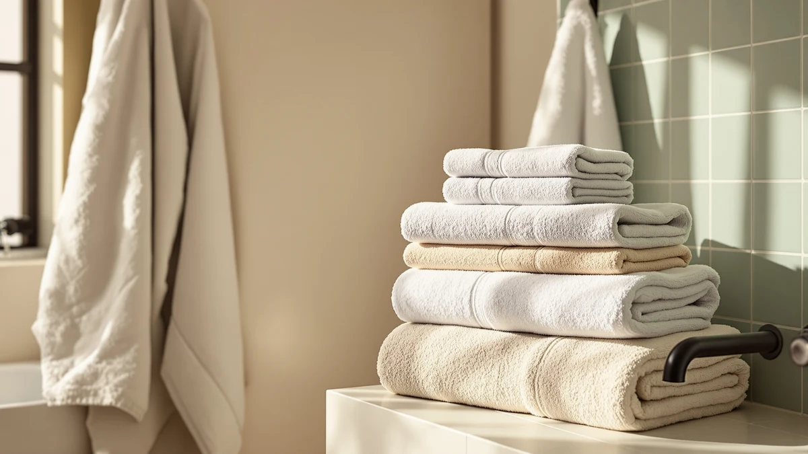

The Best Luxury Bath Sheets (2026)
Prices and picks verified as of August 2026. Independent, reader-supported reviews.


Quick Answer
The KAHAF COLLECTION 100% Cotton Bath set is the best luxury bath sheets pick for most households, combining 100% cotton construction with a full six-piece pack at $31.99. If you want a true oversized sheet instead of a standard towel, the Utopia Towels Luxurious Jumbo two-piece set is the more literal match.
Our pick: KAHAF COLLECTION 100% Cotton Bath, $31.99 Check Price on Amazon
Bottom line: our top pick is the KAHAF COLLECTION 100% Cotton Bath Towels at $28.99. The best budget option is the Belizzi Home Ultra Soft 6 Pack Cotton Towel Set at $21.86.
Things to Know Before You Buy
- Material matters more than thread count. Long-staple cotton and bamboo viscose hold up to repeated washing better than towels that lean on marketing numbers alone.
- "Bath sheet" and "bath towel" aren't interchangeable. A true bath sheet runs closer to 35 by 60 inches or larger. Several picks below are generously sized bath towels rather than true sheets, so check the dimensions in our comparison table.
- Pack size changes the math. A six-piece set that includes hand towels and washcloths can cost less per towel than a single oversized sheet.
- Weight affects drying time. Heavier towels feel more luxurious but take longer to dry between uses, especially in a humid bathroom.
- Prices in this guide range from about $22 to $44, so both budget and luxury shoppers have a workable option.
Finding the best luxury bath sheets means weighing fiber quality, weight, and pack size against a price that can swing from budget-friendly to upscale. A towel labeled "luxury" on Amazon does not always match that claim once you look past the listing photos at the fabric and finishing. We compared seven of the most popular options by material, dimensions, and what verified buyers report after regular use, so you can skip the trial and error.
Our top pick, the KAHAF COLLECTION 100% Cotton Bath set, uses long-staple cotton and ships as a full six-piece pack, which makes it the easiest recommendation for a household replacing an entire towel rotation at once. If you specifically want an oversized sheet rather than a standard bath towel, the Utopia Towels Luxurious Jumbo two-piece set is built and marketed as a true bath sheet.
Not every household needs the same towel. A guest bathroom might do fine with a budget-friendly option like the Belizzi Home Ultra Soft six-piece set, while a primary bathroom used daily benefits from the heavier weight of the Cariloha bamboo viscose towel or the American Soft Linen set. We break down the tradeoffs for each pick below, including the honest drawbacks.
Why You Should Trust Us
This guide is written and maintained by Ilane Tall, home and bath editor at Best Bath Towels, who covers linens, bedding, and bathroom essentials for this site. We do not run a fake testing lab, and we do not claim to have physically compared every towel in this guide. Instead, we research specifications, compare verified pricing, and read through owner reviews on Amazon to identify which luxury bath sheets consistently earn praise and which ones draw the same complaints across dozens of buyers. Every recommendation is checked against the manufacturer's own listed materials and dimensions before it earns a spot on this page.
How We Picked
We started with the pool of bath towels and bath sheets available through our Amazon product database, then narrowed the list to seven models that best represent the luxury bath sheets category. We prioritized products with 100% cotton or bamboo viscose construction, since natural fibers absorb water more effectively than synthetic blends. We also compared pack size and pricing per towel, since a six-piece set and a single oversized sheet solve different problems even when they sit in the same price range. Finally, we cross-checked each listing's stated dimensions and material against the manufacturer's product description to rule out mislabeled or inconsistent listings.
How We Compared
We compared these seven picks using the specifications each manufacturer lists on Amazon: fiber content, weight category, dimensions, and pack configuration. We read through verified buyer reviews for recurring themes, such as complaints about thinning after repeated washes or praise for how quickly a towel dries between uses. Because this guide is research-based rather than hands-on, we do not assign numeric scores. Instead, we group each pick by what it is best for, whether that is an oversized sheet, a value multi-piece set, or a lightweight option for daily rotation.
Our Picks

KAHAF COLLECTION 100% Cotton Bath
What we like
- 100% cotton construction for reliable absorbency
- Six-piece pack covers a full towel rotation
- 4-star average across verified buyers
Flaws but not dealbreakers
- 24 by 48 inches is closer to a standard bath towel than an oversized sheet
- Six matching towels take up more storage space than a single sheet
| Material | 100% cotton |
| Size | 24x48 - 6 Pack |
The KAHAF COLLECTION 100% Cotton Bath set earns the top spot in this guide because it solves a common problem: replacing worn-out towels usually means buying more than one at a time. This six-piece pack gives you a full rotation of 24 by 48-inch cotton towels at $31.99, which works out to about $5.33 per towel, well below what a single premium bath sheet often costs on its own.
Owners report that the cotton holds up over repeated washes without the fraying that cheaper blends show after a few months. The 4-star average across verified buyers reflects consistent feedback on softness and absorbency, though a few reviewers note the towels feel more like everyday bath towels than a true oversized luxury sheet. If you specifically want the larger sheet format, pair this set with the Utopia Jumbo pick below rather than relying on it alone.

American Soft Linen 100% Cotton
What we like
- 100% cotton across all three towel types
- Includes hand towels and washcloths alongside the bath towels
- 4-star average across verified buyers
Flaws but not dealbreakers
- At $39.99, it costs more per towel than our top pick
- A few reviewers note the color can run slightly off from the listing photos
| Material | 100% cotton |
| Size | 6PC (2BT + 2HT + 2WC) |
The American Soft Linen set is our runner-up because it covers more ground than a bath-towel-only pack. The six-piece set includes two bath towels, two hand towels, and two washcloths, all in matching 100% cotton, so you are not stuck buying hand towels separately to complete the set.
At $39.99, this set costs more per piece than the KAHAF pick, but the tradeoff is a fully coordinated bathroom rather than bath towels alone. Owners report that the cotton stays soft through regular washing, earning the same 4-star average as our top pick. A handful of verified buyers mention the color running slightly lighter or darker than pictured, which is worth keeping in mind if you are matching an existing color scheme.

SUTERA Silverthread Bath Towel |
What we like
- Low price point among the cotton-blend options in this guide
- Silverthread fabric construction is designed for quick drying
- 4-star average across verified buyers
Flaws but not dealbreakers
- Listed in a small size, so it will not replace a full bath sheet
- Cotton blend rather than 100% cotton
| Material | Cotton blend |
| Size | Small |
The SUTERA Silverthread towel is a cotton blend built around SUTERA's proprietary fiber technology, which the brand markets as faster-drying than standard cotton. At $22.99, it is one of the least expensive picks in this guide, making it a low-risk way to try the fabric before committing to a larger size.
This listing is sized small, so reviewers who bought it expecting a bath sheet were sometimes surprised by the compact dimensions. Owners who bought it for its intended use, as a smaller everyday towel, hold it to a 4-star average and report it dries noticeably faster than the heavier cotton towels elsewhere in this guide. If size is your priority, look at the Quick Dry or Cariloha picks instead.

Quick Dry Bath Towel 100%
What we like
- 100% cotton with a large-size format
- Sold as a single towel, so you are not paying for pieces you do not need
- 4-star average across verified buyers
Flaws but not dealbreakers
- At $38.99 for one towel, the per-towel cost runs higher than the multi-piece sets in this guide
- SUTERA's quick-dry marketing claims are not independently verified
| Material | 100% cotton |
| Size | Large |
The SUTERA Quick Dry towel is sold as a single large-format towel rather than part of a multi-piece pack, which makes it the pick for anyone who only needs one oversized towel and does not want to pay for a full set. At $38.99, it is a straightforward way to add one bigger towel to an existing rotation without buying six at once.
The 100% cotton construction and large size put it closer to true bath-sheet territory than the standard 24 by 48-inch towels elsewhere in this guide. Verified buyers hold it to a 4-star average, and reviewers consistently note it dries faster between uses than older cotton towels in their rotation, which tracks with SUTERA's quick-dry positioning, though we have not independently verified the drying-speed claim beyond what owners report.

Cariloha Bamboo Viscose Bath Towels
What we like
- Bamboo viscose and cotton blend for a soft feel
- Largest single-towel dimensions listed in this guide at 30 by 56 inches
- 4-star average across verified buyers
Flaws but not dealbreakers
- At $44.00, it's the most expensive pick in this guide
- Bamboo viscose blends can take longer to dry than 100% cotton
| Material | 100% cotton |
| Size | 30 inches x 56 inches |
Cariloha's bath towel blends bamboo viscose with cotton, and at 30 by 56 inches it is the largest single towel measured in this guide, closer to what most people picture when they hear "luxury bath sheet." That size and fiber blend come at the highest price here, $44.00, which makes it the upgrade pick for anyone prioritizing size and feel over cost.
Owners report the bamboo viscose blend feels noticeably softer against skin than straight cotton, which tracks with how bamboo-derived fibers are generally described. The towel holds a 4-star average among verified buyers. A recurring theme in owner feedback is that the blend takes a bit longer to dry fully compared to the 100% cotton picks in this guide, so it may need extra time on the bar or hook between uses in a humid bathroom.

Utopia Towels - Luxurious Jumbo
What we like
- Sold explicitly as a bath sheet, not a standard bath towel
- 100% cotton construction
- 4-star average across verified buyers
Flaws but not dealbreakers
- Two-piece set, so it won't cover a full towel rotation on its own
- Jumbo dimensions mean it takes longer to dry than smaller towels
| Material | 100% cotton |
| Size | 2 Piece Bath Sheet |
Utopia Towels markets this two-piece set explicitly as a jumbo bath sheet rather than a bath towel, which makes it the most literal match for the best luxury bath sheets category among the seven picks here. At $32.99 for two, it lands in the middle of the price range while delivering the oversized coverage a true bath sheet is supposed to provide.
The 100% cotton construction and jumbo format hold a 4-star average across verified buyers. Reviewers consistently note the extra coverage compared to a standard towel. Because it ships as a two-piece set rather than a full rotation, you will likely want to pair it with a smaller everyday towel pick, like the KAHAF or Belizzi sets above, rather than relying on it as your only bathroom towel.

Belizzi Home Ultra Soft 6
What we like
- Lowest total price in this guide at $21.86
- 100% cotton across the full six-piece set
- 4-star average across verified buyers
Flaws but not dealbreakers
- The listed 12 by 12-inch spec reflects the washcloth size within the set, not the bath towel
- At this price, expect a lighter weight than the premium picks above
| Material | 100% cotton |
| Size | 12" x 12" |
Belizzi Home's Ultra Soft six-piece set is the most affordable option in this guide at $21.86, undercutting every other pick by several dollars while still delivering a full 100% cotton set. For a guest bathroom or a first apartment, it covers the basics without the premium price tag attached to the Cariloha or American Soft Linen sets.
The 12 by 12-inch dimension in our specs table reflects the washcloth included in the six-piece set rather than the bath towel itself, so buyers focused specifically on an oversized bath sheet should look at the Utopia or Cariloha picks instead. Within its price bracket, owners report the cotton feels reasonably soft for the cost, and the set holds a 4-star average among verified buyers, though several reviewers note the towels run lighter weight than the pricier picks in this guide.
Quick Comparison
| Product | Material | Price | Rating | Best for | Get it |
|---|---|---|---|---|---|
| KAHAF COLLECTION 100% Cotton Bath | 100% cotton | $31.99 | 4 | Full towel rotation | View on Amazon → |
| American Soft Linen 100% Cotton | 100% cotton | $39.99 | 4 | Matching bath, hand, and washcloth set | View on Amazon → |
| SUTERA Silverthread Bath Towel | | Cotton blend | $22.99 | 4 | Trying Silverthread fabric | View on Amazon → |
| Quick Dry Bath Towel 100% | 100% cotton | $38.99 | 4 | One large towel, no set | View on Amazon → |
| Cariloha Bamboo Viscose Bath Towels | 100% cotton | $44.00 | 4 | Softest daily-use pick | View on Amazon → |
| Utopia Towels - Luxurious Jumbo | 100% cotton | $32.99 | 4 | True oversized bath sheet | View on Amazon → |
| Belizzi Home Ultra Soft 6 | 100% cotton | $21.86 | 4 | Lowest price per piece | View on Amazon → |
What makes a towel a bath sheet instead of a bath towel?
A bath sheet is a larger version of a standard bath towel, typically starting around 35 by 60 inches, compared to the roughly 27 by 52-inch size of a standard bath towel.
Is 100% cotton better than a cotton blend or bamboo viscose for bath sheets?
100% cotton is generally the most absorbent option and holds up well over repeated washing, which is why most of the picks in this guide use it.
The Competition
Several other towels came up during our research but did not make the final list. Some listings marketed as "Egyptian cotton" did not specify a verifiable long-staple certification, which made it impossible to confirm the claim against the price. Others bundled towels of noticeably different quality under a single Amazon listing, where reviews for a bath towel and a washcloth version were combined. That made the star rating unreliable for the specific size we needed. We also passed on a few microfiber blends marketed as "luxury," since microfiber tends to feel slick rather than absorbent compared to the cotton and bamboo viscose picks above, even at a similar price.
Across the seven towels we compared for this guide, the KAHAF COLLECTION 100% Cotton Bath set remains our pick for the best luxury bath sheets for most households, thanks to its balance of 100% cotton construction, full six-piece coverage, and a price under $32.